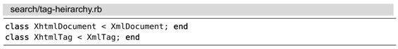

技巧84对完整的查找匹配进行操作
Vim的查找命令允许我们高亮所有匹配并在它们之间快速跳转，但是在完整的匹配上进行操作也很有必要。接下来，让我们看看如何构造一条可以适用于所有匹配的动作命令，尽管这些匹配有可能长短不一。
Vim的查找命令帮助人们方便地在某个模式的所有匹配之间来回跳转，但是如果我们想对匹配进行修改时，该用什么命令呢？
在有些文本编辑器中，查找命令不仅把光标移到匹配结果上，而且还会选中所匹配的内容。这样一来，只要我们愿意，就可以方便地操作这个匹配了。相比之下，在Vim中，尽管匹配会被完整地高亮起来（如果‘hlsearch’选项被启用的话），但光标只会位于匹配的起始位置。因此，如果我们想操作这个匹配，要么选中这段高亮的文本，要么使用可以覆盖相同文本范围的动作命令。
哪一条Vim动作命令可以帮助我们实现这个目的呢？和以往一样，答案依旧是“看情况”。如果我们的模式匹配某个完整的单词，则可以用e或者iw操作这个单词。但如果匹配只覆盖了单词的一部分，该怎么办？如果每个匹配的长短不一，又将如何处理呢？
先来看一个例子。在以下这段文本中，我们将要处理几个类：XmlDocument、 XhtmlDocument、XmlTag，以及XhtmlTag。

假设想把它们改成下面这样：
我们可以使用gU{motion}命令将一段文本转换为大写，但在这种情况下，采用什么动作命令才最理想呢？
如果只想操作单词“Xml”，我们可以运行gU3l（或者3gUl），即可将光标后面的3个字符转换为大写。如果只想操作“Document”类，则可以运行gUtD，它会把光标到第一个字符D之间的所有字符都转换为大写。但是这两种方案不能单独完成所有的4处修改。
首先，要构造一个可以匹配“Xml”或者“Xhtml”的正则表达式。这很容易，/\vX(ht)?ml\C <CR>即可轻松搞定。其中，元字符\C会强制区分大小写，因此，无论‘ignorecase’及‘smartcase’选项是否被启用，都不会影响本次查找。在我们执行完查找模式的命令后，这4段即将被操作的文本都会被高亮起来，且光标位于第一处匹配的起始位置。
表13-3向我们展示了一种可行方案。
表13-3 —— 对一个完整的查找匹配进行操作
这里有个窍门，即gU//e<CR>。我们将//e<CR>作为一个动作命令使用，其范围涵盖由查找匹配的起始到结尾之间的全部内容。无论匹配的结果是3个字符（“Xml”）还是5个字符（“Xhtml”），都无所谓，因为//e<CR>动作命令都会在完整的查找匹配上执行。
但此时遇到一个问题。如果我们按下n键，会在重复上一次查找时附带//e<CR>偏移。也就是说，n键不能跳转至下一处匹配的起始位置，而是跳到其结尾。为了将光标移至匹配的起始位置，我们必须运行//<CR> ，以重复不带偏移的查找。
很麻烦，是不是？好消息是.命令可以重复上一次修改，即gU//e<CR>。坏消息是我们必须用//<CR>跳转至下一处匹配的起始位置。本来此处的理想点范式应是n.，但我们不得不接受//<CR>.这个替代方案。在一个用于查找匹配的文本对象中，我们将讨论一个更优的方案，该方案要用到一个插件。
你可能已经注意到，本例可以使用另一种替代方案，即gUfl。其中fl动作命令将光标从匹配的起始位置跳转到下一处出现字母l的位置，由于“Xml”与“Xhtml”都以这个字母结尾，所以此方案对于这两种情况都适用。
在此例设计之初，我并没注意到这种解决方案，而且我认为其原因值得注意。相对于小写字母而言，大写字母更显眼，因此，它们更容易被看到，也更容易被当成目标（请参考像Scrabble®玩家那样思考）。当我们处理单词“MixedCase”时，用后面的大写字母作为移动目标（tC）要比用C之前最后一处小写字母（fd）更容易。
一个用于查找匹配的文本对象
理想的点范式要求用一次按键移动光标，用另一次按键执行修改。在技巧84所展示的示例中，仅移动光标，我们就花费了3次按键操作（//<CR>），这离理想状态相去甚远。令人吃惊的是，在Vim中，真地再也找不出一条更适于操作查找匹配的内置动作命令了。
我们可以有效地利用Vim脚本，将此功能集成进来。我最喜爱的方案就是使用由Kana Natsuno开发的textobj-lastpat插件(1)了，它增加了一个i/ 文本对象用于操作查找匹配。当我们使用这个文本对象时，只需运行gUi/即可完成相同的修改。和前面不同的是，我们不必使用3次按键操作（//<CR>），只需一次n命令就可以跳转到下一处匹配了。换句话说，这一次，我们终于得到了一个理想的点范式。